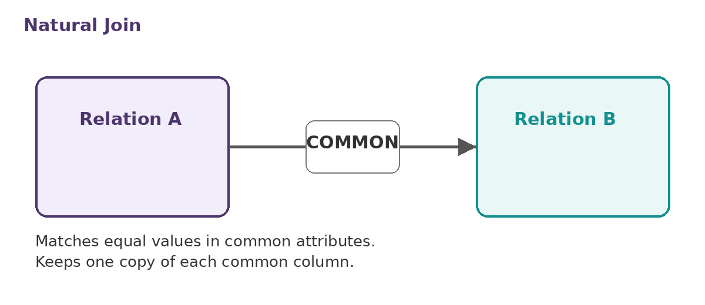
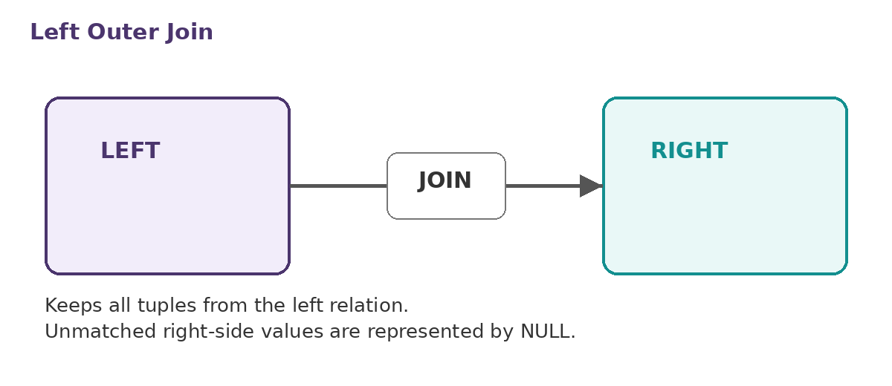
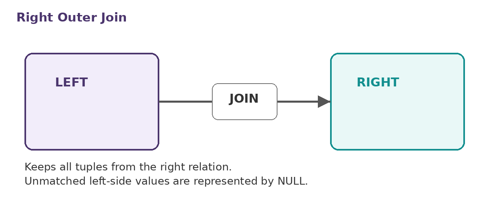
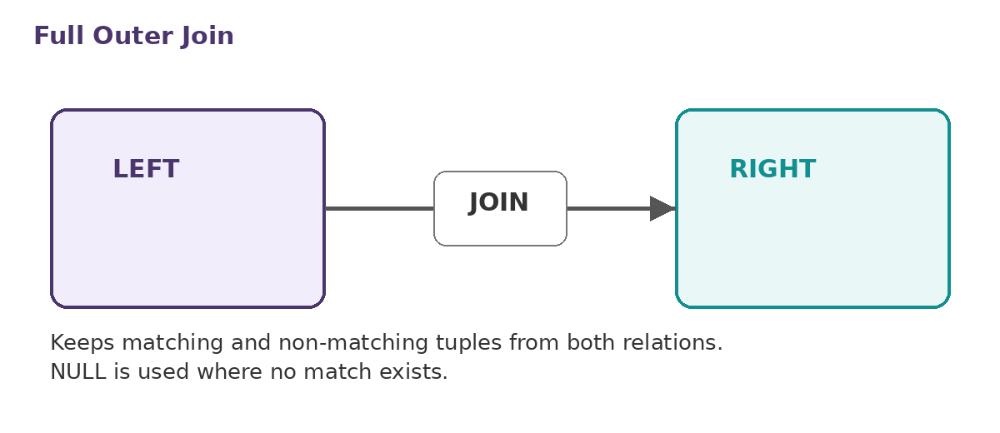

Join Expressions
Natural, inner and outer joins, ON and USING
DBMS • CHAPTER 4
A simple study guide covering Join Expressions, Views, Transactions, Integrity Constraints, SQL Data Types and Schemas, Index Definition in SQL, and Authorization.
Natural, inner and outer joins, ON and USING
Virtual relations, materialized views and updates
COMMIT, ROLLBACK, atomicity and isolation
Keys, CHECK, foreign keys and assertions
DATE, TIME, TIMESTAMP, INTERVAL, BLOB and CLOB
Indexes, privileges, GRANT, REVOKE and roles
CORE STUDY MATERIAL
Important definitions, explanations, syntax and examples from the complete chapter PDF.
Join operations take two relations and return another relation. A join can be viewed as a Cartesian product in which tuples from the two relations must match under a condition; the join also determines which attributes appear in the result. The chapter lists Natural Join, Inner Join and Outer Join.
A natural join matches tuples with the same values for all common attributes and retains only one copy of each common column. Example: SELECT name, course_id FROM student NATURAL JOIN takes;
The USING construct lets us specify exactly which columns should be equated, avoiding accidental matching of attributes with the same name. Example: SELECT name, title FROM (student NATURAL JOIN takes) JOIN course USING (course_id);
The ON condition allows a general predicate over the relations being joined. It is written like a WHERE predicate but uses ON. Example: SELECT * FROM student JOIN takes ON student_ID = takes_ID; This is equivalent to SELECT * FROM student, takes WHERE student_ID = takes_ID;
An outer join extends the join operation to avoid loss of information. It computes the join and then adds tuples from one relation that do not match tuples in the other relation, using NULL values. Forms: LEFT OUTER JOIN, RIGHT OUTER JOIN and FULL OUTER JOIN.
The join condition defines which tuples in the two relations match. The join type defines how tuples that do not match any tuple in the other relation are treated.
The chapter gives examples including: course NATURAL RIGHT OUTER JOIN prereq; course FULL OUTER JOIN prereq USING (course_id); course INNER JOIN prereq ON course.course_id = prereq.course_id; and course LEFT OUTER JOIN prereq ON course.course_id = prereq.course_id.
A view is a virtual relation made visible to a user even though it is not part of the conceptual model. Views can hide selected data from users; for example, an instructor's ID, name and department can be exposed without exposing salary.
A view is defined using CREATE VIEW: CREATE VIEW v AS <query expression>. The query expression is any legal SQL expression. The view name can then be used to refer to the virtual relation. Defining a view saves an expression; it does not create a new relation by simply evaluating and storing the query result.
Example: CREATE VIEW faculty AS SELECT ID, name, dept_name FROM instructor; Then: SELECT name FROM faculty WHERE dept_name = 'Biology'; A view with named columns can also be used for grouped totals: CREATE VIEW departments_total_salary(dept_name, total_salary) AS SELECT dept_name, SUM(salary) FROM instructor GROUP BY dept_name;
One view may be used in the expression defining another view. v1 depends directly on v2 if v2 is used in v1's definition. v1 depends on v2 if it depends directly or through a path of dependencies. A view is recursive if it depends on itself.
Some database systems physically store view relations. A physical copy is created when the view is defined. Such a view is called a materialized view. If underlying relations are updated, the materialized result can become out of date and must be maintained.
Most SQL implementations allow updates only on simple views. The chapter's conditions are: the FROM clause has only one database relation; the SELECT clause contains only attribute names of that relation, with no expressions, aggregates or DISTINCT; attributes not listed may be set to NULL; and there is no GROUP BY or HAVING clause. Some view updates cannot be translated uniquely, and some cannot be translated at all.
A transaction is a sequence of query and/or update statements and is a unit of work. The SQL standard specifies that a transaction begins implicitly when an SQL statement is executed.
COMMIT WORK makes the updates performed by the transaction permanent in the database. ROLLBACK WORK undoes all updates performed by SQL statements in the transaction.
An atomic transaction is either fully executed or rolled back as if it never occurred. Transactions also provide isolation from concurrent transactions.
Integrity constraints guard against accidental damage to a database by ensuring that authorized changes do not result in loss of data consistency. The chapter examples include minimum account balances, minimum salaries and required non-null phone numbers.
The chapter lists NOT NULL, PRIMARY KEY, UNIQUE and CHECK(P) as constraints on a single relation.
NOT NULL requires a value to be supplied. Example: name VARCHAR(20) NOT NULL; budget NUMERIC(12,2) NOT NULL.
A primary key is the key used to identify tuples in a relation. The chapter contrasts it with candidate keys under UNIQUE: candidate keys are permitted to be NULL, whereas primary keys are not.
UNIQUE(A1, A2, …, Am) specifies that the listed attributes form a candidate key. Candidate keys are permitted to be NULL, in contrast to primary keys.
CHECK(P) specifies a predicate P that must be satisfied by every tuple in a relation. Example: CHECK (semester IN ('Fall','Winter','Spring','Summer')).
Referential integrity ensures that a value appearing in one relation for a given set of attributes also appears for a corresponding set of attributes in another relation. If A is a set of attributes in R and S, and A is the primary key of S, A is a foreign key of R if every value of A in R also appears in S.
A foreign key can be specified in CREATE TABLE: FOREIGN KEY (dept_name) REFERENCES department. By default, it references the primary-key attributes of the referenced table; the referenced attribute list may also be specified explicitly.
When a referential-integrity constraint is violated, the normal procedure is to reject the action. For DELETE or UPDATE, cascading may be used. Example: ON DELETE CASCADE ON UPDATE CASCADE. Alternatives include SET NULL and SET DEFAULT.
For self-referencing foreign keys such as person having father and mother references to person, the chapter gives three approaches: insert father and mother first; initially set them to NULL and update later when allowed; or defer constraint checking.
The predicate in CHECK can be an arbitrary predicate that can include a subquery. Example: CHECK (time_slot_id IN (SELECT time_slot_id FROM time_slot)). The condition must be checked when section is inserted/modified and when time_slot changes.
An assertion is a predicate expressing a condition that the database should always satisfy. Syntax: CREATE ASSERTION <assertion-name> CHECK (<predicate>); The chapter examples include constraints on total credits and preventing an instructor from teaching in two classrooms in the same time slot and semester.
DATE stores dates containing a four-digit year, month and date. Example: DATE '2005-7-27'.
TIME stores time of day in hours, minutes and seconds. Examples: TIME '09:00:30' and TIME '09:00:30.75'.
TIMESTAMP stores a date plus time of day. Example: TIMESTAMP '2005-7-27 09:00:30.75'.
INTERVAL represents a period of time. Example: INTERVAL '1' DAY. Subtracting date/time/timestamp values produces an interval, and interval values can be added to date/time/timestamp values.
Large objects such as photos, videos and CAD files can be stored as large objects. BLOB is a binary large object containing uninterpreted binary data whose interpretation is left to an application outside the database system. CLOB is a character large object containing character data. When a query returns a large object, a pointer is returned rather than the large object itself.
CREATE TYPE creates a user-defined type. Example: CREATE TYPE Dollars AS NUMERIC(12,2) FINAL; It can then be used in a table, such as budget Dollars.
CREATE DOMAIN in SQL-92 creates a user-defined domain type. Types and domains are similar, but domains can have constraints such as NOT NULL. Example: CREATE DOMAIN degree_level VARCHAR(10) CONSTRAINT degree_level_test CHECK (VALUE IN ('Bachelors','Masters','Doctorate'));
An index is a data structure on an attribute of a relation that lets the database system find tuples with a specified attribute value efficiently, without scanning every tuple. It is useful when queries reference only a small proportion of records.
CREATE INDEX <name> ON <relation-name> (attribute);
Example: CREATE INDEX studentID_index ON student(ID). Then SELECT * FROM student WHERE ID = '12345' can use the index to find the required record without looking at all student records.
Users may be assigned authorizations on parts of a database. Each authorization type is a privilege. The chapter lists READ, INSERT, UPDATE and DELETE. A user may receive all, none or a combination of these privileges on a relation or view.
INDEX allows creation and deletion of indices. RESOURCES allows creation of new relations. ALTERATION allows addition or deletion of attributes in a relation. DROP allows deletion of relations.
GRANT is used to confer authorization. Syntax: GRANT <privilege list> ON <relation or view> TO <user list>. The user list can be a user-id, PUBLIC, or a role. Example: GRANT SELECT ON department TO Amit, Satoshi. Granting a privilege on a view does not imply privileges on underlying relations. The grantor must already hold the privilege or be the database administrator.
SELECT gives read access to a relation or ability to query using a view. INSERT allows insertion of tuples. UPDATE allows updating with UPDATE. DELETE allows deletion of tuples. ALL PRIVILEGES is a short form for all allowable privileges.
REVOKE removes authorization. Syntax: REVOKE <privilege list> ON <relation or view> FROM <user list>. Example: REVOKE SELECT ON student FROM U1, U2, U3. ALL may be used to revoke all privileges the revokee may hold. Privileges that depend on the revoked privilege are also revoked. With PUBLIC, all users lose the privilege except those granted it explicitly; duplicate grants can affect retention.
A role distinguishes among users in terms of what they can access or update. Create one with CREATE ROLE <name>, for example CREATE ROLE instructor. Users can be assigned to roles with GRANT instructor TO Amit. Privileges can be granted to roles, and roles can be granted to users or other roles, forming a chain of roles.
The chapter illustrates creating a view such as geo_instructor and granting SELECT on the view to geo_staff. It raises the question of what happens when a geo_staff member has no permissions on the underlying instructor relation, or when the view creator lacks some permissions on instructor.
REFERENCES privilege allows creation of a foreign key, for example GRANT REFERENCES (dept_name) ON department TO Mariano. The chapter also introduces transfer of privileges using WITH GRANT OPTION, and revocation using CASCADE or RESTRICT.
EXAM REVISION
CREATE VIEW v AS <query>; CREATE INDEX name ON relation(attribute); GRANT privilege ON relation_or_view TO user_list; REVOKE privilege ON relation_or_view FROM user_list;
VISUAL REVISION
Simple original diagrams representing the join relationships described in the chapter.

Matches equal values in common attributes and keeps one copy of common columns.

Keeps all tuples from the left relation; unmatched right-side values use NULL.

Keeps all tuples from the right relation; unmatched left-side values use NULL.

Keeps matching and non-matching tuples from both relations; NULL represents missing matches.
SELF TEST
10 MCQs based only on the uploaded Chapter 4 PDF.
FINAL REVISION